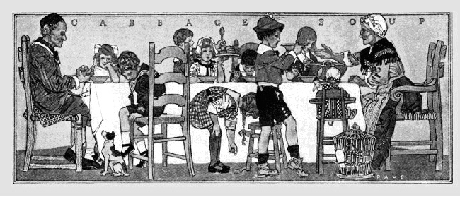

| Nội dung thủ bút: Trước năm 1945 và có lẽ trước năm 1960, người địa phương không gọi “đồng bằng sông Cửu Long” mà gọi là Miệt Vườn, với câu hát khá phổ biến: Mẹ mong gả thiếp về vườn, Ăn bông bí luộc, dưa hường nấu canh… Sơn Nam |
Sơn Nam (Phạm Minh Tài): Viết văn. Sinh ngày: 11-12-1926, tại Rạch Giá, Kiên Giang
Tác phẩm: Tìm hiểu đất Hậu Giang 1959, Chuyện xưa tích cũ 1958, Hương rừng Cà Mau 1962, Chim quyên xuống đất 1963, Hình bóng cũ 1964, Vạch một chân trời 1968
Sơn Nam
Hơi thở của miền Nam nước Việt
Sơn Nam, một trong những nhà văn có giá trị của miền Nam nước Việt. Hôm nay, tôi viết về Sơn Nam không phải là cuộc đối thoại giữa hai người làm văn nghệ mà chính thực chỉ nói lên vài cảm nghĩ của người đọc sách đối với người sáng tác.
Sơn Nam đến với tôi không đem theo gió bão hoặc nỗi quằn quại, ray rứt, chua xót của con người thời đại. Sơn Nam đến với tôi bằng hơi thở, bằng nụ cười hồn nhiên, bằng nhớ thương nhè nhẹ, bằng những ngón tay giao cảm chạy dài theo những con rạch giăng mắc như mạng nhện khắp vùng châu thổ miền Nam nước Việt.
Sơn Nam, một tâm hồn đơn thuần, chất phác như luống cày. Sơn Nam sống như con chim rừng nhỏ nhoi lạc vào thành phố. Có những chiều, không gian câm nín tựa phiến đá, thời gian lắng đọng trong khung trời thép rỉ, người đọc Sơn Nam mới cảm thấy tự đáy lòng dâng lên từng đợt sóng u hoài. Đã nhiều lần, đêm trắng không kêu vào giấc ngủ, tự nhiên mấy câu thơ thay lời tựa của Sơn Nam trong tác phẩm Hương rừng Cà Mau lại vang vang trong hồn tôi như hơi kèn đồng lên qua khe cửa vũ trường bay vút lên trời cao tím ngắt:
“Muỗi, vắt nhiều hơn cỏ
Chướng khí mù như sương
Thân không là lính thú
Sao chưa về cố hương?
Chiều chiều nghe vượn hú
Hoa lá rụng buồn buồn
Tiễn đưa về cửa biển
Những giọt nước lìa nguồn
Đôi tâm hồn cô tịch
Nghe lắng sầu cô thôn
Dưới trời mây heo hút…
Hơi vọng cổ nương bờ tre bay vút
Điệu hò… ơ theo nước chảy chan hoà…”
Sơn Nam sinh trưởng tại miền Hậu Giang, nơi muỗi, vắt nhiều hơn cỏ. Hơi thở của Sơn Nam hôm nay là hơi thở của miền Nam nước Việt hôm qua. Chính vì đó, Sơn Nam đã dẫn dắt chúng ta qua tác phẩm để tìm lại sức sống, một sức sống tiềm tàng, phong phú của những con người coi nhẹ gian lao, cực khổ, khinh cái chết, trọng tiết tháo và giàu lòng nhân từ trong buổi đầu đi tìm đất mới. Tâm hồn Sơn Nam không bị ánh sáng phù phiếm của đô thị chi phối. Những phát minh về cơ khí cũng như mọi phát minh khác do sự cố gắng của con người hiện đại tạo ra với mục đích làm cho con người được hưởng một phần an nhàn của thể xác, đối với Sơn Nam, có lẽ chẳng làm anh thích thú. Sự kiện này được chứng minh xuyên qua những suy nghĩ của anh trong tác phẩm.
Người đọc Sơn Nam không hề tìm thấy dấu vết của đại lộ, không một ánh sáng điện, không cả những công viên với hàng ghế sơn xanh đậm, có những chiếc lá vàng rơi – như cánh bướm lạc loài – trên bồn cỏ mát mùi da thịt, mà các nghệ sĩ hôm nay thường dùng như biểu tượng sinh hoạt văn nghệ với chiều sâu ý thức. Ở Sơn Nam, đại lộ là những con rạch, những con rạch Thuồng Luồng, rạch Cái Cau, rạch Bình Thuỷ và nhiều con rạch khác có những tên nghe lạ tai nhưng gợi lên từng âm hưởng xa vời. Và ánh sáng của đời sống chỉ là cái thếp đèn thắng bằng dầu cá, còn công viên là những cánh rừng tràm xanh ngắt, nơi “chướng khí mù như sương” và xác lá ngập cao hàng mấy thước đã bao nhiêu ngày tháng chẳng ai buồn nhặt. Sơn Nam, với tâm hồn cố sơ luôn luôn nuối tiếc quá khứ. Anh coi quá khứ là lẽ sống duy nhất, nên anh bấu víu quá khứ như đứa trẻ dang mười ngón tay bé nhỏ ôm chặt lấy mẹ hiền, e sợ nếu lỏng tay người mẹ sẽ chạy trốn. Sơn Nam thiết tha với con người cũ, yêu mến mảnh đất “chôn nhau cắt rốn” vì thế, tuy giam thân ở trong lòng thành phố đầy cám dỗ của vật chất, của tiến hóa, mà mỗi khi nhúng bút vào mực thì nỗi buồn sầu xứ lại ứ nghẹn trong máu, trong tim, rồi than vãn:
“Thân không là lính thú
Sao chưa về cố hương?...”
Về cố hương để làm gì? Nếu không phải là sống với hòn Cố Tròn, vùng Mả Lan, với những xóm Khoen Cà Tưng, xứ Cà Bây Ngộp, với cảnh “dưới sông sấu lội, trên bờ cọp đua” với cây Huê xà, trái Mù u, lá Năng kim, Ô rô và cỏ ống, hơn nữa còn có thể chuyện trò với những nhân vật như ông Từ Thông, ông Năm Xay Lúa, chú Xồi, con Bảy đưa đò, chú Tư Dinh, lão Bích và các nhân vật rất xa lạ đối với dân thành phố nhưng rất gần gũi với cuộc sống nông thôn.
Mỗi câu chuyện của Sơn Nam là một bức hoạ đặc biệt và khác biệt từ hình thể tới màu sắc. Đọc Sơn Nam, ta có cảm tưởng như chính ta đã sống, đã đi vào từng chi tiết của nếp sống đó. Con người hôm nay bị chi phối quá nhiều bởi dục vọng. Sự đấu tranh của con người trong cuộc sống hôm nay quả thật xa cách, xa cách như con đường thiên lý không có trạm dừng chân, đối với con người hôm xưa, những con người “trên phá sơn lâm, dưới đầm Hà Bá” đã có công làm cho mảnh đất miền Nam được phì nhiêu bằng cách bón vào lòng đất mới, xương máu của mình. Người xưa ra đi với chí hướng quyết liệt, vì sự sinh tồn của kiếp người, những kiếp người nói theo văn chương hôm nay – sinh ra đời dưới ngôi Sao xấu – nhưng tâm hồn người xưa thật bao dung, độ lượng. Dòng máu du mục chắc hãy còn xao xuyến ở trong mỗi phân vuông trên da thịt, nên bản chất của người dân miền Nam vốn hiếu động. Nhưng trường hợp Sơn Nam là ngoại lệ. Sơn Nam từ chối hiện tại bằng cách một mình lững thững đi sâu vào dĩ vãng. Cuộc sống nội tâm đã thúc đẩy, dồn ép Sơn Nam vào chiều hướng nhất định, anh vui vẻ nhận lấy và tự kiêu hãnh vì mình đã tìm thấy hồn mình trong đó. Anh kể lại nếp sống xa xưa ấy với tất cả say mê, cởi mở. Sơn Nam viết văn giản dị như nói chuyện. Câu chuyện tuy quê mùa nhưng không kém tế nhị, sâu sắc. Những nhân vật của Sơn Nam, trên thực tế, chưa cách biệt với cuộc sống hôm nay bao nhiêu, mới chỉ độ 3, 4 chục năm trời mà sao, những hình bóng ấy, qua lời văn của Sơn Nam lại xa ta như những nhân vật trong truyện cổ tích? Chúng ta vẫn thường gặp họ lang thang trên khắp nẻo đường miền Hậu Giang, trên các sông ngòi. Chúng ta đã từng ca ngợi họ và viết tên họ bằng chữ hoa trong trang sử đấu tranh của dân tộc. Mà sao, mà sao ở giữa lòng thành phố, dưới ánh sáng chói chang do điện lực tạo nên, nhìn họ qua trang giấy trắng, mực đen, chúng ta có cảm tưởng như nhìn thấy bóng ma, hoặc những hình thể xa mờ, chập chờn ẩn hiện sau lớp sương mù dĩ vãng? Chính vì lo sợ một ngày nào những hình bóng thân yêu ấy sẽ biến mất đi, mất đi vĩnh viễn như xác người, xác vật nát rữa trong mùa nước lụt, Sơn Nam không thể tàn nhẫn đến độ dửng dưng để mặc cho sự đổ vỡ của nếp sống xảy ra sau mỗi cơn nước giựt, nên Sơn Nam đã cố gắng làm cho họ, lớp-người-đi-trước, sống lại trong văn chương, để ghi nhận sự có mặt của quá khứ, sự có mặt oai hùng và hiển hách. Sơn Nam đã tận dụng tài hoa: với những ngón tay phù thuỷ anh nhào nặn ra những nhân vật sống động phản ánh đúng lề lối sinh hoạt của miền Hậu Giang trong giai đoạn chót của đời sống nô lệ, trong đột khởi của ý thức đấu tranh đòi trả lại tự do cho kiếp người, đã từng nhân danh con người mà tranh đấu.
Nhưng, điểm cao quý nhất trong tác phẩm của Sơn Nam vẫn là tình thương đồng loại. Trong cảnh sống cơ cực của bước đầu khai phá, những con người thương mến nhau qua hoạn nạn, cùng cảm thông với nỗi cơ cực, bần hàn trong hoàn cảnh luôn luôn bất lợi cho con người vì một lúc phải đối phó với hai kẻ thù: thực dân và thiên nhiên. Sự kiện chua xót này được thể hiện trong truyện ngắn “Một cuộc biển dâu”.
Nội dung truyện đó tóm tắt như sau: Lão Bích bị ho lao mười mấy năm trời vì cuộc sống quá đày ải, biết rằng mình sắp chết mà vẫn phải bỏ chòm xóm ra đi vì thiếu thuế thân, và không biết trông cậy vào đâu mà sống.
Ra đi với cái gì? Chỉ có đứa con nhỏ với chiếc xuồng nát.
Sau cuộc vượt đồng đêm tránh thuế, lão Bích chết giữa dòng nước mênh mông, xác neo dưới ruộng. Trước khi chết, lão nhớ mình còn cái áo đang mặc, bảo con cởi ra lấy mà dùng, mình chết trần cũng được, chúng ta hãy nghe Sơn Nam diễn tả trạng huống đó:
Thằng Kim bò trên xuống, hươi dầm định đập lũ quạ đang liều lĩnh bu lại mũi xuồng. Lão Bích lắc đầu:
“Nó muốn rỉa xác tao thì cứ rỉa. Coi chừng chìm xuồng, rán bơi tới nữa… con ơi!”
Rồi lão nắm tay nó mà kéo lại sát mặt:
“Thấy chòm cây, xóm nào trước mặt không? Hừng sáng rồi hả?”
Thằng Kim hoảng hồn, đoán rằng cha nó hấp hối. Mặt trời sắp lặn. Nó bơi mạnh, qua lượn sóng to, nó hồi hộp, chưa kịp nghỉ tay là lượn sóng khác tràn tới. Đằng xa kia, ẩn hiện trên ngọn sóng, lúa xanh rì. Từ hồi sáng, mặc dầu nó bơi liên tiếp, cảnh vật xung quanh vẫn y hệt. Nước chảy hăng, tràn lan từ bờ sông Hậu Giang ra vịnh Xiêm La, chảy mãi về hướng Tây. Nó thắc mắc: nước ở đâu mà nhiều quá, ngập đồng ruộng, sâu cỡ hai thước mênh mông không bờ, không bến như biển khơi. Hồi hôm lão Bích dẫn giải:
“Đây vùng ruộng xạ thuộc tỉnh Long Xuyên. Hằng năm, nước lên vài tháng rồi giựt xuống. Đi tắt như vậy hơi cực, nhưng không ai xét giấy thuế thân.”
Giờ đây nó mới hiểu rõ sự thật của tiếng “hơi cực”.
… Mặt trời xuống, ngày một thấp. Và rặng cây ban nãy biến đâu rồi? Sóng gió đã dịu. Phía trước mũi xuồng, lố nhố những đống đen ngòm, chuyển động như giăng ngang kín chân trời.
Lão Bích nói với giọng yếu ớt:
“Thấy bờ bến gì chưa?”
Nó nghiêng tai nghe tiếp:
“Ba để lại cho con chiếc áo này… Yếu quá… Ba ngồi dậy cởi áo không được… Con…”
Nó trố mắt. Hai chân của cha nó im lìm như khúc gỗ, bỗng nhiên cựa quậy, giãy giụa.
“Sao… sao không cha?”
Lão Bích không nói nên lời, môi mấp máy. Đôi mắt lão trợn trắng, rồi nhắm lại, sâu hoắm.
Thằng Kim la rú lên, bò tới. Tay chân ba nó đã lạnh ngắt, mặt thì xanh đen. Nó khóc không nên tiếng, nước mắt, nước mũi cứ tuôn xuống…
Lão Bích đã chết rồi qua những câu văn thật mộc mạc và vô cùng cảm động của Sơn Nam. Nhưng chết đã vậy, việc chôn cất thì sao? May mắn thay, thằng Kim đã được sự giúp đỡ của những con người tuy không ruột thịt nhưng tình thương đồng loại đã gần như một bổn phận thiêng liêng đối với họ. Sơn Nam nói với chúng ta nỗi cay đắng ấy:
Nghe thằng Kim thuật lại hoàn cảnh của cha nó, ông Hai Tích thở dài, gọi bà Hai nấu thêm cơm để thằng Kim cùng ăn. Thằng Kim nuốt không vô, hồi xế trưa đến giờ, tâm trí nó bận rộn vì một câu hỏi mà nó không dám thốt ra: “Chôn ba nó ở đâu? Làm sao mà chôn?”. Bà Hai gọi ông Hai ra phía sau. Hai vợ chồng nói qua nói lại thì thào. Ông Hai trở ra:
“Ý của cháu thế nào? Miệt này, mùa này ai rủi ro cũng vậy. Bác coi cháu như người nhà nên mới nói thiệt. Phải chôn gấp nội chiều nay, lòng vòng chờ sáng mai không ích lợi gì.”
Thằng Kim hỏi:
“Thưa bác, chôn ở đâu?”
Đoán được vẻ lo âu sợ hãi ấy, ông Hai Tích ngập ngừng:
“Nói là chôn cho đúng tục lệ chớ đất đâu mà chôn?”
Tứ bề là nước. Có hai cách: một là xóc cây tréo ở giữa đồng rồi treo trên mặt nước, chờ khi nước giật mới đem chôn lại dưới đất. Như vậy mất công lắm, diều quạ hoành hành. Chi bằng bó xác lại rồi dằn cây, dằn đá mà neo dưới đáy ruộng…
Thằng Kim đập đầu xuống sàn nhà, hai tay bức tóc:
"Trời ơi, phải biết vậy, ba tôi tới xứ này làm chi…"
Thế là xác lão Bích được neo ở dưới ruộng, thằng Kim đau xót nhìn mặt nước như con ác thú khổng lồ há miệng nuốt trọn thân xác cha nó một cách ngon lành, để rồi mai đây tới mùa nước giựt, thịt da của lão Bích tan vào lòng nước, còn lại nắm xương tàn cũng bị đồng hóa với xương trâu “len" đi xa chết bệnh dọc đường, không còn ai nghĩ tới, nhớ tới và bị những luống cày lấp đi cho lúa xạ mọc lên.
Tâm hồn Sơn Nam nghiêng xuống nỗi đau của cuộc đời với lối hành văn đặc biệt. Người đọc có cảm tưởng nỗi đau ấy là của chính anh. Nhưng không phải truyện nào của Sơn Nam cũng mang sắc thái u buồn ấy, có truyện anh viết thật dí dỏm như truyện “Bác vật xà-bông”, có truyện nhẹ nhàng, súc tích chứa ẩn một triết lý nhân sinh như truyện “Cô Út về rừng”. Có truyện gần giống truyện cổ hoang đường quái dị của vùng Thất Sơn kỳ bí như truyện “Miễu Bà Chúa Xứ”. Có câu truyện tình buồn man mác, thấm thía và đẹp như thơ. Họ yêu nhau vì câu hò, tiếng hát. Họ gặp nhau như cơn gió, rồi xa nhau cũng nhẹ như một cơn gió. Tiếng hò tha thiết ấy, qua lời văn của Sơn Nam, hình như đến bây giờ vẫn còn bay bàng bạc trên mặt sông Cái Lớn, trong rạch Cái Ca để nuối thương mối tình đã mất.
Dưới ngòi bút Sơn Nam, không phải đời sống của nông dân miền Nam hoàn toàn hiền lành và bao dung tuyệt đối. Họ cũng biết áp dụng triệt để “luật sống” trong những tháng ngày phải tranh giành miếng cơm, manh áo. Họ cũng biết dùng thủ đoạn, mánh khóe hiểm độc để hạ nhau như thầy Rắn Năm Điền ở trong truyện “Cây huê xà”. Nhưng luật nhân quả đã được Sơn Nam tôn trọng để đi đến kết cuộc: kẻ nào làm trái, kẻ ấy sẽ gặp không hay.
Sơn Nam viết thật phong phú. Anh dắt người đọc đi từ trạng thái này qua trạng thái khác, ở mỗi trạng thái lại nảy ra cá tính riêng biệt như truyện “Hát bội giữa rừng” đã làm người đọc nửa say mê, nửa bỡ ngỡ với không khí sặc mùi văn nghệ giữa chốn rừng sâu, chỉ có cá sấu và cọp. Mà lạ thay, cái “văn nghệ rừng” ấy lại cảm hóa được chúa sơn lâm, đến nỗi khi gánh hát đi rồi, sân khấu đã tốc nóc, bao nhiêu nọc làm hàng rào đã ngả nghiêng trên dòng nước, mà đôi cọp vẫn thường tới lui ngồi ủ rũ dựa gốc cây dừa bên bờ rạch như nhớ tiếc. Có người cho rằng nếp sống văn nghệ của Sơn Nam không theo kịp thời đại, thời đại đầy dẫy phi lý thoe quan điểm Camus, thời đại hưởng thụ của Sartre, thời đại đam mê của Sâng hoặc xa hơn nữa, thế giới trừu tượng của thi ca và hội hoạ, thế giới của những con người sống vội vã, cuồng nhiệt chạy theo dục vọng qua ánh đèn xanh đỏ. Nói một cách chính xác hơn, Sơn Nam đã từ chối vòng hoa ân thưởng với tất cả can đảm vì đã dám sống và sống thực với cảm nghĩ của mình. Sơn Nam làm văn nghệ vì sự thôi thúc của bản năng, vì nỗi dằn vặt của nội tâm. Càng đọc anh, chúng ta càng nhận thấy rõ rằng thân phận con người Việt Nam được phản ánh qua những khung cảnh khắc khổ của thiên nhiên, của xã hội, cái thiên nhiên và xã hội dưới thời nô lệ như a tòng với nhau để đè nén con người. Sơn Nam đã truyền vào máu ta từng hơi thở, hơi thở oai hùng, bất khuất của lớp người đi trước để làm vốn cho người hôm nay, cả lớp người ngày mai nữa.
Tâm hồn Sơn Nam bình dị, thật bình dị như cỏ cây và thanh thoát như khí trời. Những lời nói và hành động trong văn chương cũng như giữa cuộc sống đều toát ra sự hiền hoà, chân thực chẳng riêng với mình, còn với người. Quê hương miền Nam và kích thước của miền Hậu Giang như gói trọn trong cơ thể Sơn Nam, nó là những vi ti huyết quản, nó là xương máu, da thịt. Nó là sự “bất khả lìa”. Nó có đấy, còn đấy và mãi mãi còn đấy. Sự kiện này được chứng minh ở tâm sự của mỗi nhân vật hiện diện trong văn chương Sơn Nam. Nói đến văn chương, đích thực Sơn Nam không làm văn chương mà chỉ sử dụng văn chương để gửi gắm nỗi khắc khoải, nỗi nhớ thương quê cha đất mẹ, qua những cơn phong ba thời đại.
Không một nhân vật nào trong tác phẩm Sơn Nam lại chẳng “để đầu tư cố hương” dù gặp hoàn cảnh, trường hợp khó khăn đi nữa. Từ giáo Sĩ – chàng thanh niên có học, trong rương có sách của Nietzsche, của Kant, hai triết gia Đức, dạy truyền bá Quốc ngữ ở đất Tân Bằng – qua bao nhiêu nổi trôi rồi cuối cùng cũng lại tắp về đất cũ, vì làm sao mà quên được ngọn núi Ba Thê, núi Tà Lơn và kho tàng Óc eo với nếp sống hiền hoà và gan dạ của Bảy Thích. Làm sao quên được hình ảnh ông giáo Kiến, con người yêu đất nước như yêu thân mình, khi bị tình nghi làm cách mạng đã trốn tránh và tự thiêu ở hòn Thố Châu để khỏi bị bắt bởi tên cò “Mạc-Te” để giữ tiết tháo của kẻ sĩ Việt Nam oai dũng trong giai đoạn thê thảm mà thực dân Pháp cùng phát xít Nhật hè nhau bóc lột, đàn áp dân ta vào những năm 1943-45. A tòng tội lỗi, còn có những bộ mặt giáo Ngọc, Liễu Hương tiếp tay với giặc để ức hiếp anh em chòm xóm. Liễu Hương – đứa con gái đáng thương – hơn một lần lỡ dở tình duyên, bỏ lên Sài Gòn làm đĩ rồi quay về nơi “chôn nhau cắt rún” để gây rắc rối về tình cảm và khuấy động làm ngầu đục nếp sống cổ sơ của vùng đất Tân Bằng.
Trong tác phẩm “Chim quyên xuống đất” các nhân vật kể trên tuy không sống trọn vẹn một đời sống nguyên thuỷ và đặc biệt như các nhân vật của “Hương rừng Cà Mau” thuở miền Nam mới hình thành, nhưng không vì thế mà Sơn Nam coi nhẹ những mũi nhọn nghệ thuật xoáy vào tiềm thức người thưởng ngoạn. Người đọc bắt gặp luôn những hình ảnh sống động và thật dễ thương dù là văn tả cảnh:
Sương cuồn cuộn tràn tới từ lượn sóng dài. Hàng cây so đũa khuất hẳn. Rặng trâm bầu có lẽ lù mù đằng kia. Sĩ nhớ kỹ chỗ đó, từ hai năm nay, lúc mới trồng, cây tơ le te đâm chồi… Lớp sương trôi đến đó dội lại, rối rắm như dải lụa nhàu nát. Qua rặng trâm bầu, con đường ngoằn ngoèo không thấy gì rõ rệt nữa. Phía xa kia, trước mặt anh là phía mái trường thân yêu...
…Tháng này, tháng năm rồi mà sương còn mịt trời như hồi tháng giêng. Thứ mù sương ở miệt Tân Bằng này, chỗ khác không có. Dày đặc không thấy đường… không thấy sao trên trời, không thấy trăng, ngoại trừ đêm rằm.
“Chú biết cái gì sanh ra sương mù không?”
Câu hỏi của người nông dân đặt ra, giáo Sĩ trả lời qua sách vở tiểu học:
“Hơi nước trong không khí gặp gió lạnh, hơi đọng lại từng hạt nhỏ, nếu gió lạnh hơn nữa thì thành giọt lớn. Đó là mưa. Như cơm sôi, đọng mồ hồi trên nắp vung phải không bác?"
Người nông dân không chịu:
"Chưa đúng lý. Hơi lá cây trong rừng xông ra thành mù sương chú à. Tại sao nơi khác sương mù ít mà đây nhiều? Vì mình gần rừng. Hơi rừng ban đêm độc lắm”.
Cái mối giao tình thân mật và đơn sơ ấy là tượng trưng của nguồn thương mến vô hạn giữa những con người cùng chịu chung cảnh ngộ. Nếu có sự xáo trộn nào đó, chẳng qua chỉ như một hòn đá ném xuống ao, làm rung động mặt nước một chút rồi thôi.
Trong tác phẩm “Chim quyên xuống đất”, Sơn Nam áp dụng kỹ thuật viết truyện dài với những gút thắt, mở, với tình tiết ly kỳ để “bắt trớn” và đôi khi rời bỏ quê hương – sở trường – để thử sức với đôi cánh. Đường bay tuy không đuối nhưng nó làm người đọc bơ vơ, nhức mỏi.
Sơn Nam quả có tâm hồn phong phú, sự phong phú bẩm sinh hơn nguỵ tạo. Sơn Nam dẫn lộ cho người đọc đi vào những bí mật và bí ẩn của miền Hậu Giang màu mỡ nhưng không kém phần gai góc và cái “bất đắc chí” của một kiếp những tự cảm thấy bất lực trước thời thế ở đoạn tả ông giáo Kiến đánh cờ trong thảo am trên hòn Thổ Châu cô quạnh giữa biển khơi. Giáo Sĩ hỏi Bảy Thích:
“Ổng đánh cờ với ai? Trên hòn Thổ Châu, ai là người lạ nữa đâu? Hoặc đánh cờ với hồn ma?"
Bảy Thích chắt lưỡi:
"Tôi đố chú nói mười tiếng nữa."
"Tôi chịu thua bác."
Bảy Thích thốt nhiên cười to:
"Ông giáo Kiến đánh cờ với ông giáo Kiến để giải trí cho… ông giáo Kiến. Mình cứ tưởng tượng: ông đi một nước bên đen rồi đi một nước bên đỏ. Suy nghĩ hồi lâu, ổng đi thêm một nước nữa; lâu lâu hồi một nước với ổng. Rút cuộc ổng cho bên này thắng, bên kia thua…"
Biết mình là kẻ phạm thượng, tôi vào thảo am, lập tức chắp tay xin lỗi. Ông giáo Kiến ban đầu giận lắm, nhưng rồi lại cười, cười ra nước mắt. Ông nói: "Đời tôi ích kỷ quá. Tôi muốn bao trùm thiên văn địa lý nhưng tôi chưa hiểu gì cả. Tôi thương cả loài người, nhưng ra đây rốt cuộc tôi chỉ thương tôi. Đánh cờ tướng như tôi… chỉ là trò cười… với tôi! Thẹn thuồng quá”.
Ông giáo Kiến thương cả loài người, không sai đâu vì ông là đại diện cho lớp nông dân miền Nam của thời đại mới, nghĩa là lớp nông dân đã ý thức được vai trò lịch sử của mình. Như vậy, dù ông hay Bảy Thích, giáo Sĩ và ai ai nữa cũng vẫn chỉ là một.
Người nông dân Việt Nam căm thù Pháp qua hình ảnh cò Mạc-Te, Lơ-Hia, căm thù Ngọc qua giáo Nhật, Liễu Hương, nhưng luôn luôn che chở và thương xót kẻ thù khi kẻ thù thất thế. Ôi! Cao cả thay tinh thần dân Việt. Đây, thái độ của Bảy Thích đối với kẻ sa cơ, dù kẻ đó đã ngự trị và khống chế dân ta gần một thế kỷ:
Bảy Thích và dân ở gần đó cứ chạy về phía súng nổ, họ bàn tán rồi gọi to:
“Ai đánh với ai? Nhựt Bổn tới hồi nào/ Ông cò Mạc-Te ơi! Ông ở đâu? Tụi tôi chẳng bao giờ trả thù kẻ sa cơ thất thế! Ông ở đâu?”
Vậy đó, lòng bao dung và độ lượng ấy chẳng phải trường hợp hi hữu mà nó có thường trực ở trong mỗi con người Việt Nam thuần tuý. Ngay cả Liễu Hương cô gái giang hồ đã gieo rắc nhiều tội lỗi trong lúc sống, đã trả nợ tội lỗi bằng chính viên đạn của kẻ cùng phe, lúc chết vẫn được tha thứ như thường.
Phải chi ngoài biển có cầu
Anh ra múc nước giải oan sầu cho em.
Từ “Chim quyên xuống đất” đến “Hình bóng cũ”, Sơn Nam vẫn mang một nỗi niềm. Nỗi niềm đó là chống đối ngoại bang và cả những kẻ lợi dụng uy quyền ngoại bang để bóc lột, chà đạp lên nỗi oan khổ của người dân quê ngàn năm còn đó.
Nhân vật Henri Nhan và vợ, trong “Hình bóng cũ” đại diện cho lớp “côn đồ ác ôn”, thời nào cũng có. Chúng không ngại nhúng tay vào những việc nhơ bẩn, bất nhơn, bất nghĩa miễn sao được lợi riêng mình. Chúng bắt thân với uy quyền để tạo thế mạnh. Chúng xảo trá, lưu manh. Chúng là quân giết người, quân khốn nạn. Chúng là vết nhơ của xã hội. Chúng ích kỷ, đê hèn. Chúng nguỵ tạo danh nghĩa để che đậy sự thối tha, nhơ nhớp do chúng tạo nên. Chúng muốn người đời giương danh bằng “tiểu sử danh nhân” trong khi chúng kéo lê tâm hồn trong sự tủi nhục và đốn mạt.
Nhưng chúng không đánh lừa ai được vì chúng ta còn có lão Tư Hiếm ở vùng Mốp-Giăng, chúng ta có cô Thừa dám cởi hết áo quần trước mặt quan kinh lý che ngang ống kính đạc điền và cãi lý vì quyền lợi chung:
“Làm cái gì vậy? Trần truồng như nhộng giữa đám đông chẳng biết mắc cỡ à?”
Cô gái đáp:
“Mắc cỡ gì? Hễ cái miệng đói thì cái… mông cũng chết! Xưa nay, chưa có người nào chết đói mà cái mông còn sống được. Tôi làm vậy đó. Không mắc cỡ gì hết!”
Sau câu nói đó, số phận cô Thừa kể như đã định đoạt. Cái vùng Mốp-Giăng nằm dưới chân núi Ba Thê, cạnh kho tàng Óc Eo, cạnh bờ biển đen ngòm, lâu lâu vượn hú, khỉ kêu nghe thảm thiết bên rặng cây bần. Mưa lạnh lâu ngày, vin mãi trên cành, khỉ vượn vừa sợ đói vừa sợ té, rốt cuộc vẫn té vì đói, vì lạnh để rơi xuống bãi bùn trầy trụa xong lại trở lên cành mà vin mãi.
Vùng Mốp-Giăng còn sống nhờ chuột. Mùa nước nổi, chuột cắn đuôi nhau nối liền thành một sợi dây dài, chẳng biết nó từ xứ nào tới và đi về đâu. Tụi nó lội chập chững, con này nương sức của con kia… Mỗi tháng có năm sáu bầy như vậy. Nước giựt xuống, chuột làm ổ; trời sa mưa, cỏ non mọc nhú lên, tha hồ xây rọ mà bắt. Dân ăn chuột trừ cơm. Đó là hồi xưa, bây giờ đất Mốp-Giăng đã “thuộc” rồi nên Henri Nhan mới phải đến nhờ quan Tư Ca-Rê và lũ lính Lê Dương để tranh phần ăn của dân nghèo với những xác chết kèm theo.
Dưới ngòi bút Sơn Nam, mọi sự bất nhân đều không được dung tha. Mọi việc, mọi tình, Sơn Nam đều giải quyết đúng với tinh thần phương Đông, nghĩa là “ơn trả, nghĩa đền” thật sòng phẳng. Do đó, người đọc Sơn Nam bao giờ cũng ở trong một tư thế thoải mái.
Sở dĩ Sơn Nam có thể làm chủ bút pháp của mình trong nhiều tác phẩm chuyên viết về đồng ruộng, là vì Sơn Nam đã am hiểu đất Hậu Giang thật chu đáo. Sinh trưởng tại Hậu Giang, lớn lên tại đó, rồi chạy giặc, kháng chiến và viết văn cũng ở đó, nên miền Hậu Giang đối với Sơn Nam như hơi thở của mình, nếu mất nó Sơn Nam cũng chẳng còn.
Qua cuốn Tìm hiểu đất Hậu Giang, Sơn Nam chứng minh với người đọc về giá trị hiểu biết trong vấn đề địa lý, nhân văn, kinh tế cũng như cơ cấu xã hội của miền “trái ngọt cây lành” từ buổi đầu khai phá. Biết bao nhiêu công trình nghiên cứu, bao nhiêu sách vở và Sơn Nam, anh hãy cho chúng tôi biết dã bao nhiêu đêm trắng qua đi bên thếp đèn dầu cá anh suy tư, hoài cổ?
Trong bài tựa cuốn sách trên, giáo sư Nguyễn Thiệu Lâu viết:
“Miền Hậu Giang là miền đồng bằng, rất rộng ở về phía Nam con sông Hậu. Con sông này là chi nhánh của sông Cửu Long chảy từ Nam Vang xuống nước ta, hướng Tây Bắc – Đông Nam. Từ biên thuỳ Cam-Bốt đến cửa biển, sông dài độ hai trăm hai mươi cây số… Miền Hậu Giang là 1/3 đất miền Nam. Toàn đồng bằng rất thấp, trừ mấy ngọn đồi ở An Giang và Hà Tiên nổi lên như để làm cảnh. Trừ Ba Xuyên và An Xuyên, tức miền Bạc Liêu và Cà Mau trước thời 1/3 là bùn lầy, đầy rừng nhung nhúc những rắn”.
Và Sơn Nam viết về sân chim, trong cuốn Tìm hiểu đất Hậu Giang:
Hồi trước năm 1945, nhiều người dân ở U Minh còn mạo hiểm vào giữa rừng tìm sân chim. Họ khởi hành từ xóm Tân Bằng đi thẳng về phía Đông chừng 10 cây số… Việc khai thác rất gay go. Từng đoàn người mang gùi, búa, rủ nhau vạch một con đường giữa các bụi trầm thuỷ, dây bít. Hai người đi tiên phong cầm hai đầu cây cán cỏ, đè bẹp sậy, choại xuống. Bọn đi theo sau đó mà tiến lên rất chậm chạp. Phải đi gần hai ngày mới tới sân.
Cũng theo lời thuật lại, sân chim rộng hơn 10 mẫu, nồng nực mùi phẩn, mặt đất như bốc khói vì hơi thở của bao nhiêu con chim mẹ đang hò hét hoàng hôn. Loại lông ô rất thính hơi người, ai nấy phải cởi áo ra đẻ giấu mùi mồ hôi. Đêm đến, họ ra tay giết chim, nhổ lông rồi kéo xác chim bỏ xa.
Mỗi năm, họ vào sân lấy lông chừng đôi ba lần, cũng từ tháng giêng, tháng hai, tháng ba… Huê lợi tuy to tát nhưng phung phí nhiều sức khoẻ nên ít ai muốn mạo hiểm.
Ngày nay loại lông ô, chó đồng, già sói, bồ nông của sân chim ngày xưa đã thành giai thoại...
Chẳng cứ gì sân chim mà còn nhiều thứ khác cũng mất dần đi theo thời gian và tiến bộ chung của quốc gia, nhưng chúng ta còn Sơn Nam, tức là còn tiếng nói cổ sơ của miền Hậu Giang yêu dấu ngàn đời không phai lạt qua “Vạch một chân trời”, “Cô gái Phù Nam” và “Nhà ông Cả” đang sinh động quanh đây.
Trích văn Sơn Nam
Cây huê xà
Cây huê xà là thứ cây gì? Hình dáng ra sao? Có thiệt hay là bịa đặt? Nó có lợi hay là có hại cho loài người? Bao nhiêu câu hỏi ấy dồn dập, lẩn quẩn trong trí thằng Lợi hằng năm nay mà nó không tài nào trả lời nổi.
Cây huê xà vốn là vị thuốc chánh trong toa thuốc ngừa rắn của ba nó. Nhờ đó mà đi đến đâu người ta đều khâm phục, ba nó nổi danh là thầy Hai Rắn. Được nổi danh là một chuyện khó vì lẽ ở vùng Rạch Giá, Cà Mau thầy rắn xưa nay cũng nhiều người tài. Họ có thể cứu sống nạn nhơn, bảo đảm trăm phần trăm, nếu người bị cắn không để lâu quá hai giờ đồng hồ. Họ dùng toàn thuốc Nam dễ kiếm như gừng, cỏ ống, vôi, trầu, nhựa ống điếu, trứng rệp… Họ lại còn dám nuôi trong nhà vài con rắn để bắt chuột. Lúc họ uống nước trà, rắn nằm vắt vẻo trên đòn dông nhà, nhìn xuống gục gặc đầu. Đêm nào có trăng thì rắn đi ngao du, lên tận trên đọt lá dừa để bắt chim trong ổ hoặc rình mổ mấy con dơi rượt muỗi bay qua chớp nhoáng.
Ba thằng Lợi nổi danh hơn các thầy rắn vừa nói trên. Thuốc của ba nó vò viên sẵn, khỏi tốn thời gian tìm kiếm. Thuốc ấy mạnh lắm, trừ tuyệt nọc, nghĩa là một hai năm sau đi nữa bịnh nhơn không cảm thấy nhức xương sống mõi khi lập đông trở về. Phi thường nhất là có toa thuốc khi thoa vào tay, rắn không bao giờ dám mổ.
Hồi mới xuống rạch Thuồng Luồng này, ba nó đã có lần thí nghiệm cho các thầy thuốc trong xóm coi thử.
Ba nó – thầy Hai Rắn – loan tin:
“Tôi có bùa bắt rắn. Bùa này của Phật Thầy Tây An ở núi Sam truyền lại.”
Ai nấy phản đối:
“Nói dóc! Chân ướt chân ráo mới tới xứ này mà không để cho người ta thương! Phật Thầy Tây An xưa kia bao giờ làm bùa bắt rắn. Ngài lo giữ mối giềng đạo lý, sao cho ai nấy ăn ngay ở phải, đừng vì tiền tài mà nói dóc với chúng sinh.”
Mỉm cười, thầy Hai Rắn mời bà con đúng giờ Thìn sáng mai đến cây thị, trước miễu ông Tà. Cây thị này hồi năm ngoái bị trời đánh tét làm hai. Thiên hạ đồn rằng: Có điềm trời! Không vậy sao trong ruột cây có cái bọng đen ngòm. Dưới đáy bọng, một đống đất khô… Ngạc nhiên làm sao! Đất nhúc nhích từng cục, một con rắn hỏ ốm nhom vùng ngóc đầu lên cao, phùng mang chồm tới, giống hình cái bàn nạo. Rắn nhìn người chung quanh, huýt gió rồi rúc xuống đất vụn để ẩn mình.
Sáng hôm sau, đúng giờ Thìn, thầy Hai lại gốc cây thị với mọi người. Lấy tay vỗ mạnh vào gốc cây, thầy nói:
“Ông xà ơi! Ra đây nói chuyện chơi.”
Ai nấy trố mắt, ngạc nhiên. Có tiếng huýt gió như đáp lại rồi từ miệng bọng cây, cái bàn nạo lần lần nhô lên.
Thầy Hai lấy tay vạch vòng tròn dưới đất, vỗ xuống mạnh:
“Tôi muốn mời ông xà lại đây, ngồi trong vòng này với tôi.”
Rắn nọ bò xuống, men vào vòng đã vẽ. Thầy xòe tay ra, để cách miệng rắn chừng một tấc mà thét:
“Cắn thử coi!”
Rắn không nhúc nhích.
Thầy thét lớn hơn:
“Áp khẩu tay tôi nè! Cắn ngay đó thì tôi chết liền. Tôi đố ông dám cắn!”
Ai nấy phập phồng chờ đợi. Rắn cục cựa, thối lui, ngóng mỏ lên cao, day qua day lại. Thầy Hai trợn mắt, đưa tay xít lại gần hơn nữa. Bỗng nhiên, rắn huýt gió một tiếng rồi quay mình phóng vào bọng cây, mất dạng.
Thầy đứng dậy, vấn điếu thuốc. Vừa hút phì phà, thầy giảng rằng:
“Chém ruồi ai dụng gươm vàng làm chi! Nói thiệt cho bà con thương, tôi đây cực chẳng đã mới ra nghề. Tôi biết trong số bà con đây có người tài giỏi hơn tôi nhưng giỏi về môn khác. Thứ bùa này ít ai biết. Lúc ban sơ, tôi dùng nhơn lực để kêu rắn ra khỏi bọng cây. Kế đó, vẽ vòng tròn tức là tôi dùng thần lực. Đến khi chuyển qua thiên lực, rắn nọ phải chạy trối chết… Nhân lực, thần lực, thiên lực, đó là ba chặng đường mà tôi phải trải qua. Phần đông bà con mình xưng là thầy nhưng chỉ mới bước tới nhơn lực.”
Tài của thầy Hai Rắn, ai lại chẳng phục. Ngặt thầy kiêu hãnh quá nên hôm đó không ai muốn thụ giáo, họ bực tức ra về. Trong số ấy có Năm Điền là thầy rắn bấy lâu lừng danh ở xóm Thuồng Luồng này. Năm Điền cảm thấy bị sỉ nhục. Về nhà chú nằm suốt đêm không ngủ được, tâm trí bận rộn, cố nhớ lại mấy toa thuốc. Chú biết đây là một mưu mô của thầy Hai Rắn. Nhứt định thầy Hai có thoa vào tay một thứ thuốc đặc biệt. Ngửi nhằm mùi đó, rắn chịu không nổi, phải mờ mắt hoặc ê răng mà chạy trốn. Ăn cắp cái toa thuốc đó là diệu kế nhứt. Nghĩ vậy, chú sực nhớ tới con Lài, đứa con gái khá nhan sắc của chú.
Bấy lâu nay, chú thường để ý: Thằng Lợi, con thầy Hai Rắn, thường bén mảng lại đây để trò chuyện với con Lài.
Năm Điền bèn kêu đứa con gái vào:
"Lài à!"
"Dạ!"
Nhìn trước cửa thấy không có ai, chú nói nhỏ với con:
"Bấy lâu cha sống ở rạch này cũng là nhờ nghề trị rắn. Bây giờ, thầy Hai Rắn tính đập bể nồi cơm của cha con mình!"
Con Lài hỏi, ngây thơ:
"Sao vậy ba? Người ta lạ, mới tới…”
“Bởi vì nếu trời đã sanh Châu Do thì không có Gia Cát Lượng.”
“Gia Cát Lượng là ai vậy ba?”
Năm Điền đổ quạu:
“Không biết gì hết. Ngu quá! Mầy biết thầy Hai Rắn là cha của ai không?”
“Dạ… của anh Lợi.”
“Thằng Lợi tới lui đây hoài. Điều đó ba biết hết. Ba nào cấm cản. Nó nói gì với con…”
Con Lài bẽn lẽn:
“Anh nói muốn làm quen.”
“Ờ! Ba nói thiệt với con làm thân con gái phải giữ gìn thân thể. Không khéo, lỡ bề gì nhơ nhuốc danh giá dòng họ. Con thương nó thì phải cho ba hay để bắt buộc nó thương con…”
Con Lài buộc miệng:
“Đừng… Tội nghiệp người ta.”
“Không sao đâu. Chiều mai, con rủ nó lại ăn cơm. Sẵn dịp ba mời nó uống rượu, thứ rượu rắn giao đầu”.
Nghe đến rượu “rắn giao đầu”, con Lài liếc nhìn chai rượu thuốc để trên bàn thờ. Trong chai, ngâm hai con rắn mà ba nó lượm được hồi năm ngoái! Con rắn nước nuốt con rắn trun, có lẽ nuốt không vô nên hai con đều chết. Ba nó lượm đem về ngâm rượu.
Nó hỏi:
“Uống chết không ba? Con sợ quá.”
“Gì mà sợ. Rượu nó làm cho trai với gái thương nhau như rắn. Uống vô, thằng Lợi không bao giờ bỏ con được. Trăm sự, nó đều thiệt tình. Con nhớ hỏi nó một điều này mà thôi…”
“Điều gì ba?”
“Cái toa thuốc thoa vô tay rắn mà không cắn, của ba nó vài hôm trước, đằng cây thị trước miễu ông Tà. Nhớ hỏi cho kỳ được. Bằng không, ba giết chết cả hai đứa như giết rắn. Từ nay hai đứa bây là hai con rắn… vì chất rượu này…”
Lá rụng ơi là lá rụng!
Từng chiếc lá tràm bay tung tăng như bươm bướm mỏi cánh, đáp nhẹ xuống mặt nước từ trong ngọn rạch trôi dài ra.
Con Lài nhìn dòng nước uốn khúc qua voi, qua vịnh như con rắn bò, thứ rắn có khoang màu vàng, con rắn hổ sơn. Nó bụm mặt lại để che cái hình ảnh đó. Nhưng nào được! Kìa chiếc xuồng của thằng Lợi bơi lướt tới, vạch ra hai làn bọt nước lốm đốm trắng như con bạch hoa xà. Lập tức nó xuống bến, bơi theo, mãi đến khi xuồng thằng Lợi ghé bên bờ đìa, kề gốc cây bình bát.
Thằng Lợi day lại cười:
“Đi đâu vậy cô Hai… rắn bông súng?”
Con Lài sực nhìn chiếc áo có bông đang mặc.
Nó e thẹn, liếc thằng Lợi:
“Em giống như con rắn bông súng. Còn anh, áo đen mốc giống con rắn hổ đất. Cười em làm chi.”
“Rắn đâu dám cười rắn.” – Nó vừa nói vừa nắm tay con Lài.
Con Lài rút tay ra cho có lệ. Nó bước qua xuồng, ngã vào lòng thằng Lợi.
“Anh à!”
“Cái gì đó, hở rắn?”
“Thiên hạ thấy, họ cười chết.”
“Ai thấy mà cười? Chung quanh đây cái gì cũng là rắn như hai đứa mình. Thí dụ như mấy sợi dây choại, dây bòng bong kia…”
Con Lài gật đầu:
“Phải, dây choại, dây bòng bong giống như rắn lục, nó xanh tươi. Còn đám cỏ bồn bồn đằng kia, nó dẹp lép quả thật là rắn lá… Nhánh củi khô, kế đó, anh thấy không, anh Lợi?”
“Nó là con rắn nẹp nia, da nó xù xì…”
“Em suy nghĩ thấy sao kỳ quá, anh à. Rắn có thù oán gì với loài người, cớ sao loài người thù oán rắn. Như dây choại, cỏ bồn bồn, nhánh củi khô rất ích lợi cho con người.”
Thằng Lợi vuốt mái tóc con Lài:
“Vậy nên rắn mới buồn bực trong lòng, tụ họp lại. Con rắn này tìm con rắn kia làm bạn với nhau cho vui. Rắn với rắn thương nhau lắm.”
“Nó có cắn nhau không anh?”
“Đâu có. Mà nó cũng muốn cắn loài người. Người nào biết điều thì rắn không cắn.”
“Biết điều là sao?"
"Là biết nói chuyện với rắn. Nói chuyện bằng hơi tay, thí dụ như ba của anh…"
Con Lài cố giữ trầm tĩnh, nó biết nãy giờ nó đã nói nhảm vì uống rượu rắn giao đầu, nhưng nó nhớ lời ba nó căn dặn…
"Hơi tay của ba anh có gì mà nói chuyện được. Anh có cái hơi đó không? Tay anh đâu rồi?”
Thằng Lợi xoa tay rồi đưa ra trước mặt con Lài:
“Phải có ngải mọi. Em biết thứ ngải đó không? Múc bột nó làm bánh ăn ngon lắm. Ăn bánh ngải rồi phải uống nước chanh. Xong xuôi, nằm xuống hút một điếu á phiện với cái dọc tẩu làm bằng sừng con dinh.”
Con Lài lắng nghe từng tiếng rồi hỏi tiếp:
“Hút á phiện rồi làm gì nữa?”
“Rồi thì vợ chồng dắt tay nhau dạo kiểng, ngắm cái bông huê xà…”
“Bông huê xà là thứ gì?"
"Huê xà là huê xà. Ba của anh nói lại sau rốt."
Con Lài lẩm bẩm:
“Ngải mọi, nước chanh, á phiện, sừng dinh, huê xà. Toa này năm vị. Mình nhớ đủ hết.”
°
Năm Điền với đứa con gái bỗng nhiên chết ngã lăn tại nhà.
Tin đó truyền ra nhanh chóng. Cả rạch Thuồng Luồng, ai nấy chưng hửng. Mấy ông thầy rắn xúm lại khám nghiệm rồi quả quyết:
“Chết vì rắn. Dấu răng rắn hổ. Chắc chắn có rắn hổ nuôi trong nhà, nó phản lại chủ.”
Chờ cho thưa khách, thầy Hai Rắn tới, cầm bàn tay của hai nạn nhân nọ mà ngửi. Nước mắt của thầy bỗng dưng tuôn xuống. Chợt nhìn chai rượu thuốc “rắn giao đầu” trên bàn thờ, thầy lắc đầu, thở dài.
Đêm đó, kêu thằng Lợi ra sân mà nói:
“Mai này cha phải đi. Con ở lại một mình. Cha buồn lắm. Họ dụ dỗ con để khám phá bí mật, cha biết vậy. Nhưng trăm sự cũng vì toa thuốc nọ thiếu cây huê xà nên không linh nghiệm. Cây đó khó kiếm lắm. Cha con Năm Điền tưởng là cha nói gạt chớ thật sự nó có: dây đó tròn bằng mút đũa, vần vện như da rắn. Phải tìm ở chót núi ông Cấm, tìm cả tháng trời mới gặp một cây. Con Lài chết, có lẽ vì Năm Điền không tin con gái nên cho rắn cắn nó trước. Chừng thấy nó chết, y buồn quá nên tự tử theo, không muốn chuyện đổ bể ra e mất thể diện với bạn đồng nghề. Nghề rắn nó nghiệt như vậy đó.”
Đêm sau thầy Hai Rắn trốn xóm giềng, trốn đứa con trai mà đi mất.
Còn thằng Lợi ở lại. Tội nghiệp biết chừng nào! Nó nào hiểu tại sao loài người bày đặt ra thuốc rượu “rắn giao đầu” để dụ dỗ lẫn nhau, trong khi cái tình yêu tự nhiên còn keo sơn hơn gấp mấy! Nó không hiểu sở dĩ ngày nay nó cô độc, vắng cha, vắng tình nhân như vậy chỉ vì mối ganh tị giữa hai người đồng nghề là cha nó và cha con Lài.
Nó thơ thẩn như người mất hồn, khóc không ra nước mắt mỗi khi ra thăm nấm mộ của người tình xưa, thấy mấy dây rau muống bò lan bên cạnh.
Cây huê xà là gì? Có thiệt hay không? Lắm đêm, nó nằm chiêm bao thấy một thứ dây lốm đốm trắng mọc cheo leo ở chót núi ông Cấm, tiếp với trời xanh. Trên cảnh xa vời không nhơ bợn đó, dây huê xà nhởn nhơ uốn éo với gió núi. Giữa lòng rừng chiếc lá, hiển hiện kìa trăm ngàn gương mặt của con Lài, tươi tắn, cười riêng với nó, trẻ mãi không già…